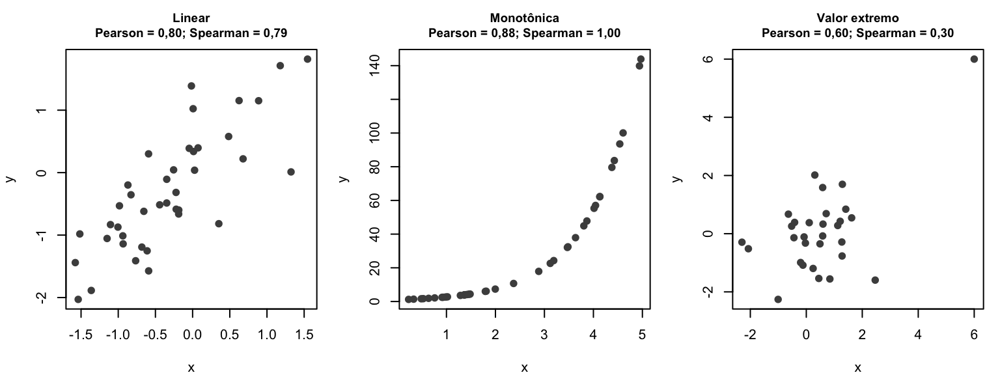
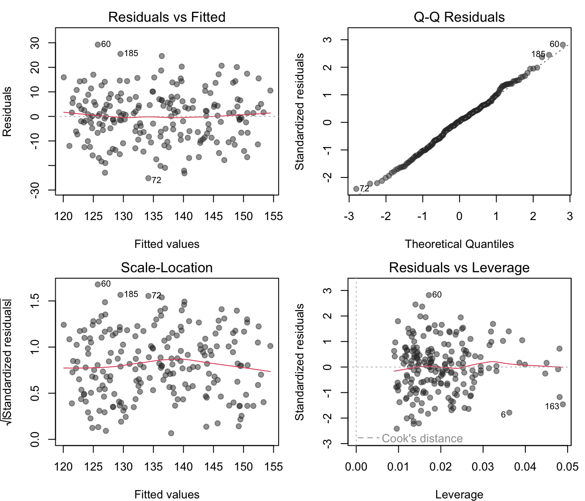
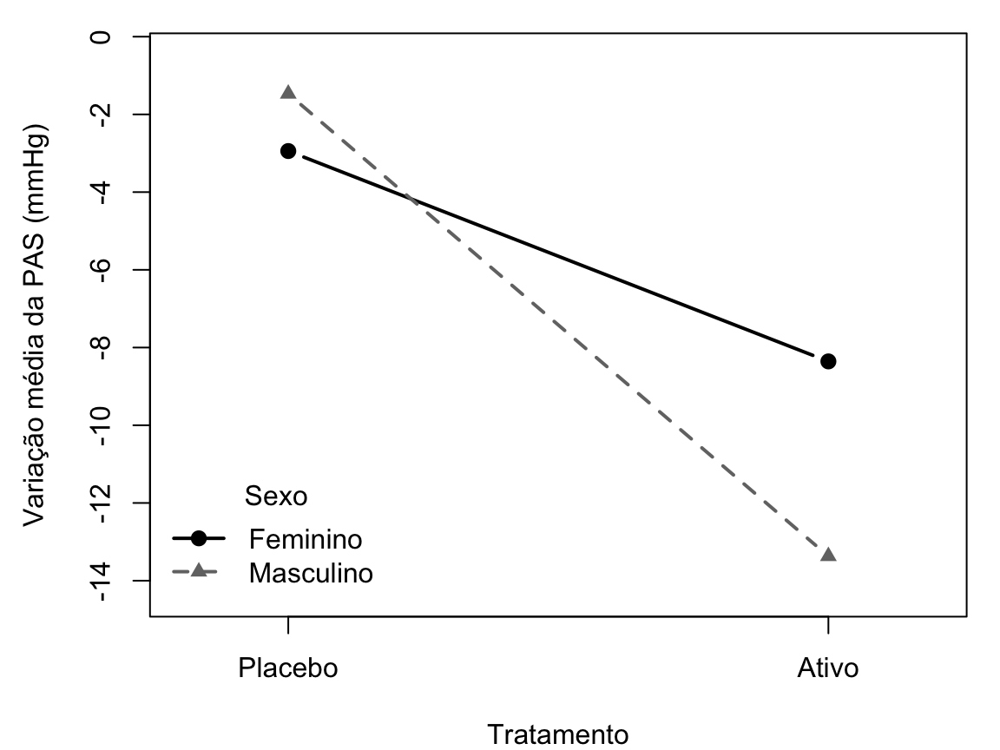
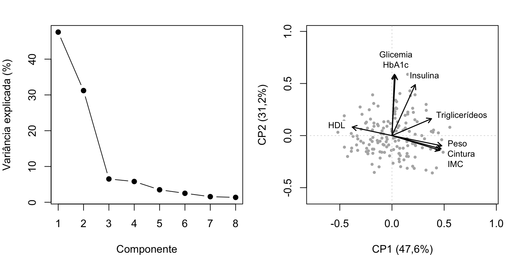
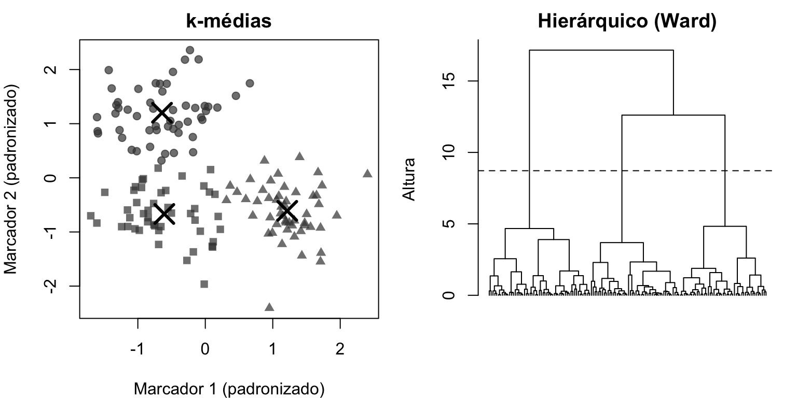

Capítulo 7 Relações entre variáveis
Hércules Rezende Freitas, Ph.D.\(^1\)
\(^1\)Universidade do Estado do Rio de Janeiro (UERJ), Faculdade de Ciências Médicas, Departamento de Ciências Médicas Integradas, Laboratório de Informática em Saúde (LabInfoS), Cabo Frio/RJ, Brasil.
Os capítulos anteriores trataram, em geral, de uma variável de cada vez, ou da comparação de uma variável entre dois grupos. A maior parte das perguntas de pesquisa, porém, envolve relações entre variáveis: a pressão arterial aumenta com o índice de massa corporal? Essa relação persiste quando se leva em conta a idade? Três esquemas de tratamento produzem respostas diferentes? O efeito de um medicamento é o mesmo em homens e mulheres? Que padrões emergem quando dezenas de biomarcadores são analisados em conjunto?
Este capítulo apresenta os métodos clássicos para responder a essas perguntas. Começamos pela correlação, que mede a intensidade da associação entre duas variáveis quantitativas, e pela regressão linear, que modela como uma variável muda em função de outras. Em seguida, tratamos da análise de variância (ANOVA), que compara médias de vários grupos e que, como veremos, é um caso particular da regressão. Por fim, introduzimos dois métodos de análise multivariada exploratória: a análise de componentes principais e a análise de agrupamentos.
Um aviso vale para todo o capítulo: os métodos aqui descritos quantificam associações. Se uma associação reflete uma relação de causa e efeito depende do desenho do estudo (capítulo Desenhos de pesquisa), do controle de fatores de confusão e de conhecimento externo aos dados, e não do método estatístico empregado.
7.1 Correlação e regressão
Usaremos um exemplo pequeno para acompanhar todos os cálculos à mão. A Tabela 7.1 mostra o índice de massa corporal (IMC, \(x\)) e a pressão arterial sistólica (PAS, \(y\)) de seis adultos (dados fictícios).
| Indivíduo | IMC (kg/m²) | PAS (mmHg) |
|---|---|---|
| 1 | 20 | 118 |
| 2 | 22 | 124 |
| 3 | 24 | 122 |
| 4 | 26 | 130 |
| 5 | 28 | 129 |
| 6 | 30 | 133 |
As médias são \(\bar{x} = 150/6 = 25\) kg/m² e \(\bar{y} = 756/6 = 126\) mmHg.
7.1.1 Correlação de Pearson e Spearman
7.1.1.1 Covariância
O ponto de partida é a covariância, que mede se as duas variáveis tendem a se afastar de suas médias no mesmo sentido:
\[ \text{cov}(x, y) = \frac{1}{n-1}\sum_{i=1}^{n}(x_i - \bar{x})(y_i - \bar{y}). \]
Quando um indivíduo tem IMC acima da média e PAS também acima da média, o produto dos desvios é positivo; quando um está acima e o outro abaixo, o produto é negativo. Se predominam produtos positivos, a covariância é positiva (associação positiva); se predominam negativos, é negativa. Note que a variância é a covariância de uma variável com ela mesma.
Para facilitar a notação, definimos as somas
\[ S_{xx} = \sum (x_i - \bar{x})^2, \qquad S_{yy} = \sum (y_i - \bar{y})^2, \qquad S_{xy} = \sum (x_i - \bar{x})(y_i - \bar{y}). \]
A Tabela 7.2 mostra o cálculo para o exemplo.
| \(i\) | \(x_i - \bar{x}\) | \(y_i - \bar{y}\) | \((x_i - \bar{x})(y_i - \bar{y})\) | \((x_i - \bar{x})^2\) | \((y_i - \bar{y})^2\) |
|---|---|---|---|---|---|
| 1 | -5 | -8 | 40 | 25 | 64 |
| 2 | -3 | -2 | 6 | 9 | 4 |
| 3 | -1 | -4 | 4 | 1 | 16 |
| 4 | 1 | 4 | 4 | 1 | 16 |
| 5 | 3 | 3 | 9 | 9 | 9 |
| 6 | 5 | 7 | 35 | 25 | 49 |
| Soma | 0 | 0 | 98 | 70 | 158 |
Temos \(S_{xy} = 98\), \(S_{xx} = 70\) e \(S_{yy} = 158\), e a covariância é \(98/5 = 19{,}6\) (kg/m²)·mmHg. O problema da covariância é que ela depende das unidades: se a PAS fosse medida em kPa, o valor mudaria, embora a associação fosse a mesma. Por isso, ela é pouco interpretável por si só.
7.1.1.2 Coeficiente de correlação de Pearson
O coeficiente de correlação de Pearson padroniza a covariância dividindo-a pelo produto dos desvios padrão:
\[\begin{equation} r = \frac{\text{cov}(x, y)}{s_x\,s_y} = \frac{S_{xy}}{\sqrt{S_{xx}\,S_{yy}}}. \tag{7.1} \end{equation}\]
No exemplo, \(r = 98/\sqrt{70 \times 158} = 98/\sqrt{11.060} \approx 98/105{,}17 \approx 0{,}932\).
## [1] 0.9318554Propriedades do coeficiente de Pearson:
- Varia de \(-1\) a \(+1\). O valor \(+1\) indica que todos os pontos estão sobre uma reta crescente; \(-1\), sobre uma reta decrescente; \(0\), ausência de associação linear.
- Não tem unidade e não se altera se as variáveis forem transformadas linearmente com coeficientes positivos (trocar mmHg por kPa ou kg/m² por qualquer múltiplo não muda \(r\)).
- É simétrico: a correlação entre \(x\) e \(y\) é igual à correlação entre \(y\) e \(x\). Não há variável dependente ou independente.
- Mede apenas associação linear. Uma relação perfeita em forma de U pode ter \(r \approx 0\). O quarteto de Anscombe, apresentado no capítulo Bioestatística descritiva, mostra quatro conjuntos com \(r \approx 0{,}82\) e padrões completamente diferentes. Por isso, a correlação deve sempre ser acompanhada do gráfico de dispersão.
- É sensível a valores extremos, porque se baseia em médias e desvios.
O quadrado do coeficiente, \(r^2\), é chamado de coeficiente de determinação e será interpretado na seção de regressão. No exemplo, \(r^2 \approx 0{,}868\).
Não existe uma escala universal para classificar a correlação como “fraca”, “moderada” ou “forte”. As classificações publicadas variam entre áreas, e o que é uma correlação alta para dois questionários psicométricos pode ser baixo para duas medidas da mesma substância por métodos diferentes. É preferível relatar o valor com seu intervalo de confiança e interpretá-lo no contexto.
Inferência sobre \(\rho\). O coeficiente amostral \(r\) estima a correlação populacional \(\rho\). Para testar \(H_0\colon \rho = 0\), usa-se a estatística
\[ t = \frac{r\sqrt{n - 2}}{\sqrt{1 - r^2}}, \]
que segue a distribuição \(t\) com \(n - 2\) graus de liberdade se os dados vierem de uma distribuição normal bivariada. No exemplo, \(t = 0{,}932\sqrt{4}/\sqrt{1 - 0{,}868} \approx 5{,}14\), com \(p \approx 0{,}007\). O intervalo de confiança é obtido pela transformação \(z\) de Fisher, \(z = \frac{1}{2}\ln\frac{1+r}{1-r}\), cuja distribuição é aproximadamente normal com erro padrão \(1/\sqrt{n - 3}\). A função cor.test() faz os dois cálculos:
##
## Pearson's product-moment correlation
##
## data: imc6 and pas6
## t = 5.1366, df = 4, p-value = 0.006807
## alternative hypothesis: true correlation is not equal to 0
## 95 percent confidence interval:
## 0.4935299 0.9926884
## sample estimates:
## cor
## 0.9318554O IC de 95% vai de 0,49 a 0,99. Com apenas seis observações, a estimativa é muito imprecisa: os dados são compatíveis tanto com uma correlação moderada quanto com uma quase perfeita.
7.1.1.3 Coeficiente de correlação de Spearman
O coeficiente de correlação de postos de Spearman (Spearman 1904), \(r_s\), é simplesmente o coeficiente de Pearson calculado sobre os postos das observações, em vez dos valores originais. Ao trabalhar com postos, ele mede a intensidade de uma associação monotônica (sempre crescente ou sempre decrescente, mas não necessariamente linear), é robusto a valores extremos e se aplica a variáveis ordinais.
Quando não há empates, existe uma fórmula equivalente e simples. Sendo \(d_i\) a diferença entre os postos de \(x_i\) e de \(y_i\),
\[ r_s = 1 - \frac{6\sum d_i^2}{n(n^2 - 1)}. \]
No exemplo, os postos do IMC são 1, 2, 3, 4, 5, 6 e os postos da PAS são 1, 3, 2, 5, 4, 6. As diferenças são \(0, -1, 1, -1, 1, 0\), e \(\sum d_i^2 = 4\). Então \(r_s = 1 - 6 \times 4/(6 \times 35) = 1 - 24/210 \approx 0{,}886\).
## [1] 1 3 2 5 4 6## [1] 0.8857143## [1] 0.8857143A Figura 7.1 mostra quando os dois coeficientes divergem.
set.seed(11)
xa <- rnorm(40); ya <- xa + rnorm(40, sd = 0.6)
xb <- runif(40, 0, 5); yb <- exp(xb)
xc <- rnorm(30); yc <- rnorm(30); xc[30] <- 6; yc[30] <- 6
op <- par(mfrow = c(1, 3), mar = c(4, 4, 3, 1))
for (k in list(list(xa, ya, "Linear"), list(xb, yb, "Monotônica"), list(xc, yc, "Valor extremo"))) {
plot(k[[1]], k[[2]], pch = 19, col = "grey30", xlab = "x", ylab = "y",
main = sprintf("%s\nPearson = %s; Spearman = %s", k[[3]],
num(cor(k[[1]], k[[2]]), 2), num(cor(k[[1]], k[[2]], method = "spearman"), 2)),
cex.main = 0.9)
}
Figura 7.1: Pearson e Spearman em três situações simuladas. À esquerda, relação linear: os coeficientes são semelhantes. No centro, relação monotônica não linear: Spearman vale 1 (associação perfeita de postos), enquanto Pearson, que mede apenas a componente linear, é menor. À direita, um único valor extremo infla o coeficiente de Pearson.
7.1.1.4 Cinco armadilhas na interpretação da correlação
- Correlação não é causalidade. Duas variáveis podem estar correlacionadas porque uma causa a outra, porque ambas são causadas por um terceiro fator (confusão) ou por acaso. O número de afogamentos e as vendas de sorvete são correlacionados porque ambos aumentam no verão.
- Restrição de amplitude. A correlação depende da variabilidade das variáveis na amostra. Se um estudo inclui apenas adultos com IMC entre 24 e 26 kg/m², a correlação entre IMC e pressão será muito menor do que na população geral, embora a relação biológica seja a mesma.
- Mistura de grupos. Combinar grupos com médias diferentes pode criar uma correlação inexistente dentro de cada grupo, ou mascarar uma existente. Correlações calculadas com dados agregados (por município, por país) não podem ser transferidas para indivíduos: é a falácia ecológica.
- Dados repetidos. Várias medidas do mesmo indivíduo não são observações independentes. Calcular a correlação como se fossem infla artificialmente a precisão.
- Correlação não é concordância. Para comparar dois métodos de medida da mesma grandeza (dois aparelhos de pressão, por exemplo), a correlação é inadequada: dois métodos podem ter \(r = 0{,}99\) e um deles medir sistematicamente 20 mmHg a mais que o outro. A concordância deve ser avaliada pelo método de Bland e Altman (1986), que analisa as diferenças entre os métodos em função de sua média.
7.1.2 Regressão linear simples e múltipla
A correlação mede a intensidade da associação, mas não diz quanto \(y\) muda quando \(x\) muda. Para isso, usamos a regressão linear. O termo “regressão” vem de Francis Galton (1886), que observou que filhos de pais muito altos tendiam a ser altos, mas menos extremos que os pais: suas estaturas “regrediam” em direção à média da população. O fenômeno, conhecido como regressão à média, é importante por si só na pesquisa clínica: pacientes selecionados por terem valores extremos (pressão muito alta, por exemplo) tendem a apresentar valores menos extremos em uma segunda medida, mesmo sem nenhum tratamento.
7.1.2.1 O modelo de regressão linear simples
Na regressão, as variáveis têm papéis diferentes: \(Y\) é a variável resposta (ou desfecho, ou dependente) e \(X\) é a variável explicativa (ou preditora, ou independente). O modelo de regressão linear simples supõe que
\[\begin{equation} Y_i = \beta_0 + \beta_1 X_i + \varepsilon_i, \tag{7.2} \end{equation}\]
em que:
- \(\beta_0\) é o intercepto: o valor esperado de \(Y\) quando \(X = 0\);
- \(\beta_1\) é a inclinação (ou coeficiente angular): a variação esperada em \(Y\) para cada aumento de uma unidade em \(X\);
- \(\varepsilon_i\) é o erro aleatório, que representa tudo o que faz o valor individual se afastar da reta (outras variáveis, variação biológica, erro de medida). Supõe-se que os erros tenham média zero, variância constante \(\sigma^2\) e sejam independentes.
O modelo diz que a média de \(Y\), para um dado valor de \(X\), está sobre uma reta: \(E(Y \mid X = x) = \beta_0 + \beta_1 x\). Os indivíduos se distribuem em torno dessa reta.
7.1.2.2 Estimação por mínimos quadrados
Os parâmetros \(\beta_0\) e \(\beta_1\) são desconhecidos e precisam ser estimados. Para qualquer reta candidata \(\hat{y} = b_0 + b_1 x\), a diferença entre o valor observado e o valor previsto pela reta, \(e_i = y_i - \hat{y}_i\), é o resíduo. O método dos mínimos quadrados escolhe a reta que minimiza a soma dos quadrados dos resíduos,
\[ \text{SQRes} = \sum_{i=1}^{n}(y_i - b_0 - b_1 x_i)^2 . \]
É a mesma ideia que, no capítulo Bioestatística descritiva, mostrou que a média é o valor que minimiza a soma dos quadrados dos desvios. Igualando a zero as derivadas parciais de SQRes em relação a \(b_0\) e \(b_1\), obtêm-se as soluções
\[\begin{equation} b_1 = \frac{S_{xy}}{S_{xx}}, \qquad b_0 = \bar{y} - b_1\bar{x}. \tag{7.3} \end{equation}\]
A segunda equação mostra que a reta de mínimos quadrados sempre passa pelo ponto \((\bar{x}, \bar{y})\). Comparando com a Equação (7.1), vê-se ainda que \(b_1 = r\,s_y/s_x\): a inclinação é a correlação reescalada para as unidades das variáveis.
Exemplo resolvido. Com os valores da Tabela 7.2:
\[ b_1 = \frac{98}{70} = 1{,}4 \text{ mmHg por kg/m²}, \qquad b_0 = 126 - 1{,}4 \times 25 = 91{,}0 \text{ mmHg}. \]
A reta ajustada é \(\widehat{\text{PAS}} = 91{,}0 + 1{,}4 \times \text{IMC}\). Interpretação: em média, cada aumento de 1 kg/m² no IMC está associado a uma PAS 1,4 mmHg mais alta. O intercepto, literalmente, seria a PAS esperada para IMC igual a zero, uma extrapolação sem sentido biológico; ele apenas posiciona a reta. Para tornar o intercepto interpretável, pode-se centralizar a variável explicativa (usar \(x - \bar{x}\)), caso em que o intercepto passa a ser a PAS esperada para o IMC médio.
## (Intercept) imc6
## 91.0 1.47.1.2.3 Decomposição da variabilidade e coeficiente de determinação
A variabilidade total de \(y\) em torno de sua média pode ser decomposta em uma parte explicada pela reta e uma parte residual:
\[ \underbrace{\sum (y_i - \bar{y})^2}_{\text{SQTotal}} = \underbrace{\sum (\hat{y}_i - \bar{y})^2}_{\text{SQRegressão}} + \underbrace{\sum (y_i - \hat{y}_i)^2}_{\text{SQRes}} . \]
No exemplo, SQTotal \(= S_{yy} = 158\). A soma explicada pela regressão é \(b_1^2 S_{xx} = 1{,}4^2 \times 70 = 137{,}2\), e a residual é \(158 - 137{,}2 = 20{,}8\). O coeficiente de determinação é a fração explicada:
\[ R^2 = \frac{\text{SQRegressão}}{\text{SQTotal}} = \frac{137{,}2}{158} \approx 0{,}868. \]
Na regressão simples, \(R^2 = r^2\). A interpretação é: 86,8% da variabilidade da PAS nesta amostra é explicada pela relação linear com o IMC. Um \(R^2\) alto não garante que o modelo esteja correto (o conjunto 2 de Anscombe tem \(R^2 = 0{,}67\) com uma relação claramente curva), e um \(R^2\) baixo não torna o coeficiente irrelevante: em estudos epidemiológicos, um fator de risco importante pode explicar uma fração pequena da variabilidade individual.
A variância residual é estimada por \(s^2 = \text{SQRes}/(n - 2) = 20{,}8/4 = 5{,}2\), e o erro padrão residual é \(s = \sqrt{5{,}2} \approx 2{,}28\) mmHg. O divisor é \(n - 2\) porque dois parâmetros foram estimados. O erro padrão residual informa, na unidade de \(y\), o afastamento típico entre os valores observados e a reta.
7.1.2.4 Inferência sobre a inclinação
A inclinação estimada \(b_1\) varia de amostra para amostra, e seu erro padrão é
\[ \text{EP}(b_1) = \frac{s}{\sqrt{S_{xx}}} = \frac{2{,}28}{\sqrt{70}} \approx 0{,}273 . \]
Para testar \(H_0\colon \beta_1 = 0\) (ausência de associação linear), usa-se \(t = b_1/\text{EP}(b_1) = 1{,}4/0{,}273 \approx 5{,}14\), com \(n - 2 = 4\) graus de liberdade, que produz \(p \approx 0{,}007\) (o mesmo valor do teste para a correlação, como deve ser). O IC de 95% é \(b_1 \pm t_{4;\,0{,}975}\,\text{EP}(b_1) = 1{,}4 \pm 2{,}776 \times 0{,}273\), isto é, de 0,64 a 2,16 mmHg por kg/m².
##
## Call:
## lm(formula = pas6 ~ imc6)
##
## Residuals:
## 1 2 3 4 5 6
## -1.000e+00 2.200e+00 -2.600e+00 2.600e+00 -1.200e+00 8.374e-15
##
## Coefficients:
## Estimate Std. Error t value Pr(>|t|)
## (Intercept) 91.0000 6.8772 13.232 0.000188 ***
## imc6 1.4000 0.2726 5.137 0.006807 **
## ---
## Signif. codes: 0 '***' 0.001 '**' 0.01 '*' 0.05 '.' 0.1 ' ' 1
##
## Residual standard error: 2.28 on 4 degrees of freedom
## Multiple R-squared: 0.8684, Adjusted R-squared: 0.8354
## F-statistic: 26.38 on 1 and 4 DF, p-value: 0.006807## 2.5 % 97.5 %
## (Intercept) 71.9059613 110.094039
## imc6 0.6432686 2.156731A saída de summary() reúne tudo o que calculamos: as estimativas dos coeficientes, seus erros padrão, as estatísticas \(t\) e os valores p, o erro padrão residual (Residual standard error), o \(R^2\) e o \(R^2\) ajustado, discutido adiante.
Intervalo de confiança e intervalo de predição. Há duas perguntas diferentes que a reta pode responder para um valor de \(x\). Qual é a PAS média de todas as pessoas com IMC de 25 kg/m²? E qual será a PAS de uma pessoa com IMC de 25 kg/m²? A estimativa pontual é a mesma (126 mmHg), mas a incerteza é muito diferente: a segunda pergunta precisa incorporar também a variação individual em torno da reta. O intervalo de predição é, por isso, sempre mais largo que o intervalo de confiança.
novo <- data.frame(imc6 = 25)
predict(modelo1, novo, interval = "confidence") # média de pessoas com IMC = 25## fit lwr upr
## 1 126 123.4153 128.5847## fit lwr upr
## 1 126 119.1614 132.8386Previsões fora da amplitude dos valores de \(x\) observados (extrapolação) não são sustentadas pelos dados: nada garante que a relação continue linear além do intervalo estudado.
7.1.2.5 Suposições e diagnóstico do modelo
As conclusões da regressão dependem de quatro suposições, frequentemente lembradas pelo acrônimo inglês LINE:
- Linearidade: a média de \(Y\) varia linearmente com \(X\).
- Independência: os erros (e, portanto, as observações) são independentes.
- Normalidade: os erros têm distribuição normal. Isso importa sobretudo para testes e intervalos em amostras pequenas; em amostras grandes, o TCL garante a validade aproximada da inferência sobre os coeficientes. Note que a suposição é sobre os erros, e não sobre \(X\) ou \(Y\).
- Variância constante (homocedasticidade): a dispersão dos erros é a mesma para todos os valores de \(X\).
Como os erros não são observáveis, as suposições são avaliadas por meio dos resíduos. A função plot() aplicada a um objeto lm produz quatro gráficos diagnósticos. Para ilustrá-los com dados mais realistas, simulamos 200 adultos em que a PAS depende da idade, do IMC e do sexo:
set.seed(2026)
n_sim <- 200
adultos <- data.frame(idade = round(runif(n_sim, 30, 80)),
sexo = factor(sample(c("Feminino", "Masculino"), n_sim, replace = TRUE)))
adultos$imc <- round(20 + 0.10 * adultos$idade + rnorm(n_sim, 0, 3), 1)
adultos$pas <- round(90 + 0.50 * adultos$idade + 0.60 * adultos$imc +
5 * (adultos$sexo == "Masculino") + rnorm(n_sim, 0, 10))
head(adultos)## idade sexo imc pas
## 1 65 Masculino 25.2 156
## 2 58 Feminino 27.2 141
## 3 37 Feminino 23.0 112
## 4 44 Masculino 18.8 126
## 5 58 Masculino 24.9 130
## 6 31 Masculino 28.4 108modelo_mult <- lm(pas ~ idade + imc + sexo, data = adultos)
op <- par(mfrow = c(2, 2), mar = c(4, 4, 2, 1))
plot(modelo_mult, pch = 19, col = adjustcolor("grey20", alpha.f = 0.5))
Figura 7.2: Gráficos diagnósticos do modelo de regressão da PAS em função da idade, do IMC e do sexo (dados simulados).
Como ler os quatro painéis da Figura 7.2:
- Resíduos versus valores ajustados (superior esquerdo): os pontos devem se espalhar aleatoriamente em torno de zero, sem curvatura (que indicaria não linearidade) e sem forma de funil (que indicaria variância não constante).
- Q-Q plot dos resíduos (superior direito): os pontos devem seguir a reta; desvios nas extremidades indicam caudas mais pesadas que a normal.
- Escala-locação (inferior esquerdo): a raiz dos resíduos padronizados em valor absoluto não deve ter tendência; uma linha crescente indica variância que aumenta com o valor ajustado.
- Resíduos versus alavancagem (inferior direito): identifica observações influentes, isto é, aquelas cuja remoção mudaria substancialmente os coeficientes. Pontos além das curvas da distância de Cook merecem investigação.
Nos dados simulados, que satisfazem as suposições por construção, os gráficos não mostram padrões. Em dados reais, a violação de linearidade pode ser tratada com transformações ou termos não lineares (polinômios, splines); a variância não constante, com transformações da resposta ou erros padrão robustos; e a dependência entre observações (medidas repetidas, pacientes agrupados por hospital), com modelos mistos, assunto do capítulo Tópicos avançados em bioestatística.
7.1.2.6 Regressão linear múltipla
Na regressão linear múltipla, a resposta é modelada em função de várias variáveis explicativas:
\[ Y_i = \beta_0 + \beta_1 X_{1i} + \beta_2 X_{2i} + \cdots + \beta_p X_{pi} + \varepsilon_i . \]
Os coeficientes continuam sendo estimados por mínimos quadrados, agora resolvidos com álgebra matricial, mas a interpretação muda:\(\beta_j\) é a variação esperada em \(Y\) para cada aumento de uma unidade em \(X_j\), mantidas constantes as demais variáveis do modelo. Diz-se que o coeficiente é ajustado para as outras variáveis.
##
## Call:
## lm(formula = pas ~ idade + imc + sexo, data = adultos)
##
## Residuals:
## Min 1Q Median 3Q Max
## -25.1660 -6.8338 0.3462 6.5497 29.2567
##
## Coefficients:
## Estimate Std. Error t value Pr(>|t|)
## (Intercept) 91.51003 5.96497 15.341 <2e-16 ***
## idade 0.55845 0.05609 9.957 <2e-16 ***
## imc 0.53341 0.25414 2.099 0.0371 *
## sexoMasculino 2.38308 1.49299 1.596 0.1121
## ---
## Signif. codes: 0 '***' 0.001 '**' 0.01 '*' 0.05 '.' 0.1 ' ' 1
##
## Residual standard error: 10.47 on 196 degrees of freedom
## Multiple R-squared: 0.4339, Adjusted R-squared: 0.4252
## F-statistic: 50.08 on 3 and 196 DF, p-value: < 2.2e-16Na saída, o coeficiente do IMC (0,53 mmHg por kg/m²) é a diferença média de PAS entre pessoas que diferem em 1 kg/m² no IMC, mas têm a mesma idade e o mesmo sexo. O coeficiente de sexoMasculino (2,4 mmHg) é a diferença média entre homens e mulheres de mesma idade e mesmo IMC.
Variáveis categóricas. Uma variável categórica com \(k\) categorias entra no modelo como \(k - 1\) variáveis indicadoras (dummies), cada uma valendo 1 para uma categoria e 0 para as outras. A categoria sem indicadora é a referência, e cada coeficiente compara a sua categoria com ela. O R faz isso automaticamente para variáveis do tipo factor; a referência é o primeiro nível (aqui, “Feminino”) e pode ser trocada com relevel().
Confusão e ajuste. Por que ajustar? Nos dados simulados, a idade aumenta tanto o IMC quanto a PAS. Uma regressão simples da PAS sobre o IMC atribui ao IMC parte do efeito da idade:
## imc
## 1.58647## imc
## 0.5334136Sem ajuste, a inclinação do IMC é 1,59 mmHg por kg/m²; ajustada, é 0,53, próxima do valor 0,60 usado na simulação. A idade é um fator de confusão: está associada à exposição (IMC) e ao desfecho (PAS) e não está no caminho causal entre eles. A regressão múltipla permite ajustar para fatores de confusão medidos; nenhum método estatístico ajusta para os que não foram medidos.
A decisão sobre quais variáveis incluir deve ser tomada com base no conhecimento do problema, idealmente antes da análise, e não por procedimentos automáticos. Métodos como a seleção stepwise (incluir e excluir variáveis conforme seus valores p) produzem coeficientes enviesados, erros padrão subestimados e modelos que não se reproduzem em novos dados (Harrell 2015). Ajustar para uma variável que está no caminho causal (um mediador) ou que é consequência do desfecho pode introduzir viés em vez de removê-lo.
\(R^2\) ajustado. O \(R^2\) nunca diminui quando se acrescenta uma variável ao modelo, mesmo que ela seja ruído. O \(R^2\) ajustado, \(1 - (1 - R^2)\frac{n - 1}{n - p - 1}\), penaliza o número de variáveis \(p\) e é mais apropriado para comparar modelos de tamanhos diferentes.
Interação. O modelo acima supõe que o efeito do IMC é o mesmo para homens e mulheres. Se houver razão para suspeitar que não é, inclui-se um termo de interação (pas ~ imc * sexo), cujo coeficiente mede a diferença entre as inclinações dos dois grupos. A interação é discutida em mais detalhe na seção sobre ANOVA fatorial.
Colinearidade. Quando duas variáveis explicativas são muito correlacionadas entre si (peso e IMC, por exemplo), o modelo tem dificuldade em separar seus efeitos: os coeficientes ficam instáveis e com erros padrão grandes. O fator de inflação da variância (VIF) quantifica o problema; valores muito acima de 5 a 10 sugerem colinearidade importante. A solução, em geral, é não incluir no mesmo modelo variáveis que medem essencialmente a mesma coisa.
Tamanho amostral. Cada coeficiente estimado consome informação. Modelos com muitas variáveis em relação ao número de observações se ajustam ao ruído da amostra (sobreajuste) e funcionam mal em dados novos. Para a regressão linear, simulações sugerem que cerca de duas observações por parâmetro bastam para estimar os coeficientes com viés pequeno (Austin and Steyerberg 2015), mas a precisão das estimativas e a capacidade preditiva exigem amostras bem maiores; em modelos de predição, são recomendados métodos formais de cálculo de tamanho amostral.
7.2 Análise de variância (ANOVA)
Quando se quer comparar as médias de três ou mais grupos, a tentação é realizar testes t para todos os pares. Com três grupos são três comparações; com cinco grupos, dez. Como vimos no capítulo Bioestatística inferencial, a realização de muitos testes aumenta a probabilidade de pelo menos um falso positivo. A análise de variância (ANOVA), desenvolvida por Ronald Fisher na década de 1920, testa a hipótese de igualdade de todas as médias em um único teste, controlando a taxa de erro tipo I.
7.2.1 A distribuição F
A estatística de teste da ANOVA segue a distribuição F, que é a distribuição da razão de duas variáveis qui-quadrado independentes, cada uma dividida pelos seus graus de liberdade:
\[ F = \frac{Q_1/k_1}{Q_2/k_2}, \qquad Q_1 \sim \chi^2_{k_1}, \quad Q_2 \sim \chi^2_{k_2}. \]
A distribuição tem dois parâmetros, os graus de liberdade do numerador (\(k_1\)) e do denominador (\(k_2\)), só assume valores positivos e é assimétrica à direita. Como cada variância amostral de dados normais é proporcional a uma qui-quadrado, a distribuição F descreve a razão de duas variâncias. Um fato útil: o quadrado de uma variável \(t\) com \(k\) graus de liberdade tem distribuição \(F\) com 1 e \(k\) graus de liberdade, o que explica por que, na regressão simples, a estatística \(F\) é o quadrado da estatística \(t\) da inclinação (\(5{,}14^2 \approx 26{,}4\)).
7.2.2 ANOVA de uma via
7.2.2.1 O modelo e a lógica do teste
Na ANOVA de uma via (ou de um fator), há \(k\) grupos definidos por uma única variável categórica, com \(n_j\) observações no grupo \(j\) e \(N = \sum n_j\) observações no total. As hipóteses são
\[ H_0\colon \mu_1 = \mu_2 = \cdots = \mu_k \qquad \text{versus} \qquad H_1\colon \text{pelo menos uma média é diferente}. \]
A ideia, que dá nome ao método, é comparar duas estimativas da variância:
- a variabilidade dentro dos grupos, que reflete apenas a variação aleatória entre indivíduos, qualquer que seja a verdade sobre \(H_0\);
- a variabilidade entre os grupos (das médias dos grupos em torno da média geral), que reflete a variação aleatória mais eventuais diferenças reais entre as médias.
Se \(H_0\) for verdadeira, as duas estimativas devem ser parecidas e sua razão deve ficar perto de 1. Se as médias forem diferentes, a variabilidade entre grupos será maior, e a razão, grande.
Formalmente, sendo \(\bar{y}_j\) a média do grupo \(j\) e \(\bar{y}\) a média geral, a soma de quadrados total se decompõe em
\[ \underbrace{\sum_{j}\sum_{i}(y_{ij} - \bar{y})^2}_{\text{SQTotal}} = \underbrace{\sum_{j} n_j(\bar{y}_j - \bar{y})^2}_{\text{SQEntre}} + \underbrace{\sum_{j}\sum_{i}(y_{ij} - \bar{y}_j)^2}_{\text{SQDentro}} . \]
Dividindo cada soma de quadrados por seus graus de liberdade, obtêm-se os quadrados médios: \(\text{QMEntre} = \text{SQEntre}/(k - 1)\) e \(\text{QMDentro} = \text{SQDentro}/(N - k)\). A estatística de teste é
\[ F = \frac{\text{QMEntre}}{\text{QMDentro}}, \]
que, sob \(H_0\), segue a distribuição \(F\) com \(k - 1\) e \(N - k\) graus de liberdade. O QMDentro é a generalização, para \(k\) grupos, da variância combinada do teste t de Student; de fato, com \(k = 2\) grupos, a ANOVA é equivalente ao teste t com variâncias iguais, e \(F = t^2\).
7.2.2.2 Exemplo resolvido
Doze pacientes com dor crônica foram distribuídos em três esquemas de analgesia (A, B e C), quatro em cada, e registrou-se a redução no escore de dor após duas semanas (dados fictícios, Tabela 7.3).
| Esquema | Observações | Média |
|---|---|---|
| A | 3, 5, 4, 4 | 4 |
| B | 6, 7, 5, 6 | 6 |
| C | 8, 9, 7, 8 | 8 |
A média geral é \(\bar{y} = 72/12 = 6\). Então:
- SQEntre \(= 4(4 - 6)^2 + 4(6 - 6)^2 + 4(8 - 6)^2 = 16 + 0 + 16 = 32\), com \(k - 1 = 2\) graus de liberdade, e QMEntre \(= 16\);
- SQDentro: no grupo A, os desvios em relação à média 4 são \(-1, 1, 0, 0\), com soma de quadrados 2; nos grupos B e C, a soma também é 2. Assim, SQDentro \(= 6\), com \(N - k = 9\) graus de liberdade, e QMDentro \(= 6/9 \approx 0{,}667\);
- \(F = 16/0{,}667 = 24\), com 2 e 9 graus de liberdade.
O valor crítico de \(F_{2,9}\) a 5% é cerca de 4,26, e o valor p é aproximadamente 0,0002. Os resultados costumam ser apresentados em uma tabela de ANOVA:
## Df Sum Sq Mean Sq F value Pr(>F)
## esquema 2 32 16.000 24 0.000247 ***
## Residuals 9 6 0.667
## ---
## Signif. codes: 0 '***' 0.001 '**' 0.01 '*' 0.05 '.' 0.1 ' ' 1## [1] 4.256495Uma medida de tamanho de efeito é o eta-quadrado, \(\eta^2 = \text{SQEntre}/\text{SQTotal} = 32/38 \approx 0{,}84\): 84% da variabilidade na redução da dor está associada ao esquema. É o equivalente do \(R^2\) da regressão.
7.2.2.3 Comparações múltiplas post hoc
Um \(F\) significativo indica que nem todas as médias são iguais, mas não diz quais diferem. Para isso, realizam-se comparações múltiplas, com algum controle da taxa de erro do conjunto de comparações. O método mais usado para comparar todos os pares é o de Tukey (Tukey 1949), conhecido como HSD (honestly significant difference), que fornece intervalos de confiança simultâneos para todas as diferenças:
## Tukey multiple comparisons of means
## 95% family-wise confidence level
##
## Fit: aov(formula = reducao ~ esquema)
##
## $esquema
## diff lwr upr p adj
## B-A 2 0.3880348 3.611965 0.0176260
## C-A 4 2.3880348 5.611965 0.0001809
## C-B 2 0.3880348 3.611965 0.0176260As três diferenças (2, 4 e 2 pontos) têm intervalos que não incluem zero. Quando o interesse é apenas comparar cada tratamento com um controle, o método de Dunnett é mais poderoso. Comparações planejadas antes do estudo, em pequeno número e justificadas pela pergunta de pesquisa, são preferíveis a comparar todos os pares por rotina.
7.2.2.4 Suposições e alternativas
A ANOVA supõe observações independentes, distribuição aproximadamente normal dos erros em cada grupo e variâncias iguais entre os grupos. Assim como o teste t, ela é razoavelmente robusta à falta de normalidade em amostras moderadas, mas sensível a variâncias diferentes quando os grupos têm tamanhos diferentes. A ANOVA de Welch (oneway.test(y ~ grupo), com var.equal = FALSE, o padrão) não supõe variâncias iguais. Quando os dados são ordinais ou muito assimétricos, a alternativa não paramétrica é o teste de Kruskal–Wallis (kruskal.test()).
##
## One-way analysis of means (not assuming equal variances)
##
## data: reducao and esquema
## F = 21.6, num df = 2, denom df = 6, p-value = 0.001814ANOVA é regressão. A ANOVA de uma via é exatamente uma regressão linear em que a variável explicativa é categórica, codificada com indicadoras. O intercepto é a média do grupo de referência, e cada coeficiente é a diferença entre a média de um grupo e a da referência. Por isso, summary(lm(reducao ~ esquema)) produz a mesma estatística \(F\) e o mesmo valor p da tabela de ANOVA. Essa equivalência unifica os métodos deste capítulo: ANOVA, teste t e regressão são casos particulares do modelo linear geral.
## (Intercept) esquemaB esquemaC
## 4 2 47.2.3 ANOVA fatorial
Na ANOVA fatorial, a resposta é analisada em função de dois ou mais fatores ao mesmo tempo. O caso mais simples é o desenho \(2 \times 2\): por exemplo, um ensaio que compara um anti-hipertensivo com placebo e analisa separadamente homens e mulheres. O desenho fatorial permite responder a três perguntas:
- Efeito principal do fator A: em média, considerando ambos os níveis de B, a resposta difere entre os níveis de A?
- Efeito principal do fator B: idem, para B.
- Interação A × B: o efeito de A é o mesmo em todos os níveis de B?
A interação é frequentemente a pergunta mais interessante. Há interação quando o efeito do tratamento depende do sexo, por exemplo, quando o medicamento reduz mais a pressão em homens do que em mulheres. Na presença de interação importante, os efeitos principais deixam de ter interpretação simples, porque não existe “o” efeito do tratamento, mas um efeito para cada sexo.
O modelo para dois fatores com interação é
\[ Y_{ijk} = \mu + \alpha_i + \beta_j + (\alpha\beta)_{ij} + \varepsilon_{ijk}, \]
em que \(\alpha_i\) é o efeito do nível \(i\) do fator A, \(\beta_j\) o efeito do nível \(j\) do fator B e \((\alpha\beta)_{ij}\) o termo de interação. A soma de quadrados total se decompõe em quatro partes (A, B, interação e resíduo), cada uma com sua estatística \(F\).
Simulamos um ensaio com 30 participantes em cada combinação de tratamento e sexo, em que o medicamento reduz a pressão em 10 mmHg nos homens e em 4 mmHg nas mulheres:
set.seed(99)
ensaio <- expand.grid(rep = 1:30, tratamento = c("Placebo", "Ativo"), sexo = c("Feminino", "Masculino"))
ensaio$tratamento <- factor(ensaio$tratamento, levels = c("Placebo", "Ativo"))
efeito <- ifelse(ensaio$tratamento == "Ativo", ifelse(ensaio$sexo == "Masculino", -10, -4), 0)
ensaio$variacao_pas <- round(-2 + efeito + rnorm(nrow(ensaio), 0, 6), 1)
modelo_fat <- aov(variacao_pas ~ tratamento * sexo, data = ensaio)
summary(modelo_fat)## Df Sum Sq Mean Sq F value Pr(>F)
## tratamento 1 2248 2248.1 68.745 2.26e-13 ***
## sexo 1 94 94.0 2.874 0.09270 .
## tratamento:sexo 1 316 315.6 9.650 0.00238 **
## Residuals 116 3793 32.7
## ---
## Signif. codes: 0 '***' 0.001 '**' 0.01 '*' 0.05 '.' 0.1 ' ' 1A fórmula tratamento * sexo é uma abreviação de tratamento + sexo + tratamento:sexo, isto é, os dois efeitos principais e a interação. O gráfico de interação (Figura 7.3) mostra as médias de cada combinação. Linhas paralelas indicam ausência de interação; linhas que divergem ou se cruzam indicam interação.
medias_fat <- with(ensaio, tapply(variacao_pas, list(tratamento, sexo), mean))
op <- par(mar = c(4, 4.5, 1, 1))
matplot(1:2, medias_fat, type = "b", pch = c(19, 17), lty = c(1, 2), lwd = 2,
col = c("black", "grey45"), xaxt = "n", xlim = c(0.8, 2.2),
ylim = range(medias_fat) + c(-1, 1),
xlab = "Tratamento", ylab = "Variação média da PAS (mmHg)")
axis(1, at = 1:2, labels = rownames(medias_fat))
legend("bottomleft", title = "Sexo", legend = colnames(medias_fat), pch = c(19, 17),
lty = c(1, 2), lwd = 2, col = c("black", "grey45"), bty = "n", inset = 0.02)
Figura 7.3: Gráfico de interação: variação média da PAS (mmHg) em cada combinação de tratamento e sexo (dados simulados). As linhas não paralelas indicam que o efeito do tratamento difere entre os sexos.
A função interaction.plot() do R produz o mesmo gráfico com uma única linha de código; aqui o desenhamos com matplot() para controlar a posição da legenda.
## Tratamento
## Sexo Placebo Ativo
## Feminino -2.943333 -8.356667
## Masculino -1.470000 -13.370000Duas observações finais sobre a ANOVA fatorial:
- Poder para interações. Detectar uma interação exige amostras muito maiores do que detectar um efeito principal de mesmo tamanho. Por isso, ensaios clínicos raramente têm poder para análises de subgrupo, e diferenças de efeito entre subgrupos relatadas sem planejamento prévio devem ser vistas com ceticismo.
- Desenhos desbalanceados. Quando os grupos têm tamanhos diferentes, as somas de quadrados deixam de ser únicas: a função
aov()usa somas de quadrados sequenciais (tipo I), cujo resultado depende da ordem dos fatores na fórmula. Em desenhos desbalanceados, o pesquisador deve decidir conscientemente qual tipo de soma de quadrados usar (tipos II ou III, disponíveis, por exemplo, no pacotecar) e declará-lo.
7.3 Análise multivariada
Os métodos multivariados analisam simultaneamente muitas variáveis medidas nos mesmos indivíduos. São indispensáveis quando há dezenas ou milhares de variáveis (painéis de biomarcadores, dados de expressão gênica, imagens, questionários com muitos itens). Esta seção apresenta dois métodos exploratórios, isto é, que buscam descrever estruturas nos dados sem testar hipóteses previamente formuladas: a análise de componentes principais, que reduz o número de variáveis, e a análise de agrupamentos, que reúne indivíduos semelhantes.
Para os exemplos, simulamos um painel metabólico de 150 adultos com oito variáveis. Por construção, as variáveis dependem de dois fatores latentes (não observados): um de adiposidade (que afeta peso, cintura, IMC e, em parte, triglicerídeos e HDL) e um glicêmico (que afeta glicemia, insulina e HbA1c).
set.seed(123)
n_p <- 150
adip <- rnorm(n_p); glic <- rnorm(n_p)
painel <- data.frame(
peso = 75 + 12 * adip + rnorm(n_p, 0, 4),
cintura = 92 + 10 * adip + rnorm(n_p, 0, 4),
imc = 27 + 4 * adip + rnorm(n_p, 0, 1.2),
trig = 140 + 25 * adip + 15 * glic + rnorm(n_p, 0, 25),
hdl = 50 - 6 * adip + rnorm(n_p, 0, 6),
glicemia = 100 + 12 * glic + rnorm(n_p, 0, 6),
insulina = 12 + 4 * glic + 2 * adip + rnorm(n_p, 0, 2.5),
hba1c = 5.8 + 0.5 * glic + rnorm(n_p, 0, 0.25)
)
round(cor(painel), 2)## peso cintura imc trig hdl glicemia insulina hba1c
## peso 1.00 0.87 0.87 0.51 -0.59 -0.14 0.24 -0.14
## cintura 0.87 1.00 0.88 0.58 -0.62 -0.12 0.24 -0.12
## imc 0.87 0.88 1.00 0.59 -0.63 -0.10 0.28 -0.06
## trig 0.51 0.58 0.59 1.00 -0.43 0.22 0.44 0.24
## hdl -0.59 -0.62 -0.63 -0.43 1.00 0.06 -0.18 0.04
## glicemia -0.14 -0.12 -0.10 0.22 0.06 1.00 0.67 0.80
## insulina 0.24 0.24 0.28 0.44 -0.18 0.67 1.00 0.64
## hba1c -0.14 -0.12 -0.06 0.24 0.04 0.80 0.64 1.007.3.1 Componentes principais
7.3.1.1 A ideia
Com oito variáveis correlacionadas, boa parte da informação é redundante: peso, cintura e IMC medem essencialmente a mesma coisa. A análise de componentes principais (ACP, ou PCA, do inglês principal component analysis) substitui as variáveis originais por novas variáveis, os componentes principais, com três propriedades (Jolliffe and Cadima 2016):
- cada componente é uma combinação linear das variáveis originais: \(\text{CP}_1 = a_{11}X_1 + a_{12}X_2 + \cdots + a_{1p}X_p\);
- os componentes são não correlacionados entre si;
- os componentes são ordenados pela variância que explicam: o primeiro componente é a combinação linear com a maior variância possível; o segundo, a de maior variância entre as não correlacionadas com o primeiro; e assim por diante.
Geometricamente, a ACP gira os eixos do espaço das variáveis para que o primeiro eixo aponte na direção de maior dispersão da nuvem de pontos. Se os primeiros dois ou três componentes concentram a maior parte da variância, eles resumem os dados com pouca perda de informação, e podem ser representados em um gráfico.
Os coeficientes \(a_{jk}\) são os autovetores da matriz de covariâncias (ou de correlações), e a variância de cada componente é o autovalor correspondente. Os autovetores são chamados de cargas (loadings) e indicam quanto cada variável contribui para o componente.
7.3.1.2 Padronização
A ACP é sensível às escalas: uma variável medida em unidades com valores grandes (triglicerídeos, em mg/dL) dominaria a variância total em relação a outra com valores pequenos (HbA1c, em %). Quando as variáveis estão em unidades diferentes, elas devem ser padronizadas (média zero e desvio padrão um) antes da análise, o que equivale a fazer a ACP sobre a matriz de correlações. Na função prcomp(), isso se faz com scale. = TRUE.
## Importance of components:
## PC1 PC2 PC3 PC4 PC5 PC6 PC7
## Standard deviation 1.9505 1.5801 0.72171 0.68133 0.52831 0.44767 0.35400
## Proportion of Variance 0.4755 0.3121 0.06511 0.05803 0.03489 0.02505 0.01566
## Cumulative Proportion 0.4755 0.7876 0.85276 0.91078 0.94567 0.97072 0.98639
## PC8
## Standard deviation 0.32999
## Proportion of Variance 0.01361
## Cumulative Proportion 1.00000## PC1 PC2
## peso 0.46 -0.14
## cintura 0.47 -0.13
## imc 0.48 -0.10
## trig 0.38 0.16
## hdl -0.38 0.08
## glicemia 0.02 0.59
## insulina 0.22 0.49
## hba1c 0.03 0.587.3.1.3 Interpretação
O primeiro componente explica 47,6% da variância total, e o segundo, 31,2%; juntos, 78,8%. As cargas mostram que o primeiro componente reúne principalmente peso, cintura, IMC e HDL (este com sinal oposto), recuperando o fator de adiposidade, e que o segundo reúne glicemia, insulina e HbA1c, recuperando o fator glicêmico. Triglicerídeos e insulina, que na simulação dependem dos dois fatores, têm cargas nos dois componentes. O sinal das cargas é arbitrário: inverter todos os sinais de um componente produz uma solução equivalente.
Para decidir quantos componentes reter, examina-se o gráfico de sedimentação (scree plot), que mostra a variância de cada componente, e procura-se o ponto a partir do qual a curva se achata. Critérios auxiliares incluem reter componentes com autovalor maior que 1 (quando se usa a matriz de correlações) ou que expliquem, acumuladamente, uma fração preestabelecida da variância. O biplot representa simultaneamente os indivíduos (pontos) e as variáveis (setas) no plano dos dois primeiros componentes.
op <- par(mfrow = c(1, 2), mar = c(4, 4, 2, 1))
plot(100 * var_exp, type = "b", pch = 19, xlab = "Componente", ylab = "Variância explicada (%)")
# Biplot desenhado manualmente para controlar a posição dos rótulos
cargas <- acp$rotation[, 1:2]
escores <- acp$x[, 1:2]
escores <- escores / max(abs(escores)) * max(abs(cargas)) # escores na escala das cargas
plot(escores, pch = 19, cex = 0.5, col = "grey70", asp = 1,
xlim = c(-0.75, 0.95), ylim = c(-0.45, 0.85),
xlab = sprintf("CP1 (%s%%)", num(100 * var_exp[1])),
ylab = sprintf("CP2 (%s%%)", num(100 * var_exp[2])))
abline(h = 0, v = 0, col = "grey85", lty = 3)
arrows(0, 0, cargas[, 1], cargas[, 2], length = 0.08, lwd = 1.5)
# Variáveis com setas quase coincidentes recebem um único rótulo empilhado
grupos_set <- cutree(hclust(dist(cargas)), h = 0.08)
rotulos <- c(peso = "Peso", cintura = "Cintura", imc = "IMC", trig = "Triglicerídeos",
hdl = "HDL", glicemia = "Glicemia", insulina = "Insulina", hba1c = "HbA1c")
for (g in unique(grupos_set)) {
idx <- which(grupos_set == g)
ponta <- colMeans(cargas[idx, , drop = FALSE])
txt <- paste(rotulos[rownames(cargas)[idx]], collapse = "\n")
ang <- atan2(ponta[2], ponta[1])
# rótulo além da ponta da seta, ancorado pelo lado voltado para a seta
x_t <- ponta[1] + 0.07 * cos(ang); y_t <- ponta[2] + 0.07 * sin(ang)
aj <- c((1 - cos(ang)) / 2, (1 - sin(ang)) / 2)
w <- strwidth(txt, cex = 0.8); h <- strheight(txt, cex = 0.8)
rect(x_t - aj[1] * w - 0.01, y_t - aj[2] * h - 0.01,
x_t + (1 - aj[1]) * w + 0.01, y_t + (1 - aj[2]) * h + 0.01, col = "white", border = NA)
text(x_t, y_t, txt, cex = 0.8, adj = aj)
}
Figura 7.4: Análise de componentes principais do painel metabólico simulado. À esquerda, variância explicada por componente (gráfico de sedimentação). À direita, biplot: os pontos são indivíduos e as setas indicam a direção e o peso de cada variável nos dois primeiros componentes. Variáveis com setas praticamente coincidentes compartilham um rótulo.
Cuidados com a ACP: (i) ela captura apenas relações lineares; (ii) componentes são construções estatísticas, e dar-lhes nomes (“fator de adiposidade”) é uma interpretação que precisa de respaldo substantivo; (iii) a ACP é um método de redução de dimensão, diferente da análise fatorial, que postula um modelo explícito de fatores latentes e erros, embora as duas sejam frequentemente confundidas.
7.3.2 Clusterização
A análise de agrupamentos (cluster analysis, ou clusterização) busca dividir os indivíduos em grupos de modo que os de um mesmo grupo sejam parecidos entre si e diferentes dos de outros grupos. Em saúde, é usada, por exemplo, para propor subtipos de doenças a partir de perfis clínicos ou moleculares. Ao contrário dos métodos de classificação supervisionada, não há um rótulo verdadeiro conhecido: os grupos emergem dos dados.
7.3.2.1 Medindo a semelhança
Todo método de agrupamento depende de uma medida de distância entre indivíduos. A mais comum é a distância euclidiana, \(d(\mathbf{x}, \mathbf{y}) = \sqrt{\sum_j (x_j - y_j)^2}\). Assim como na ACP, variáveis em escalas diferentes devem ser padronizadas antes; caso contrário, a distância será dominada pelas variáveis com valores maiores. Para variáveis categóricas ou mistas, existem outras distâncias (por exemplo, a de Gower).
7.3.2.2 Agrupamento hierárquico
O agrupamento hierárquico aglomerativo começa com cada indivíduo em seu próprio grupo e, a cada passo, une os dois grupos mais próximos, até restar um único grupo. A distância entre grupos é definida pelo método de ligação: ligação completa (maior distância entre membros), simples (menor distância), média, ou o método de Ward, que une os grupos cuja fusão menos aumenta a variância interna. O resultado é um dendrograma, uma árvore em que a altura de cada junção indica a distância entre os grupos unidos. Cortar a árvore em uma altura define os grupos.
7.3.2.3 Método das k-médias
O método das k-médias (k-means) exige que se defina antecipadamente o número \(k\) de grupos e procede assim:
- escolhem-se \(k\) centros iniciais (em geral, aleatoriamente);
- cada indivíduo é atribuído ao centro mais próximo;
- cada centro é recalculado como a média dos indivíduos atribuídos a ele;
- repetem-se os passos 2 e 3 até que as atribuições não mudem.
O algoritmo minimiza a soma dos quadrados das distâncias de cada indivíduo ao centro do seu grupo, mas pode convergir para soluções diferentes conforme os centros iniciais. Por isso, deve ser executado com várias inicializações (argumento nstart da função kmeans()), retendo-se a melhor.
7.3.2.4 Exemplo e validação
Simulamos dois biomarcadores em 150 pacientes pertencentes a três subgrupos verdadeiros e aplicamos os dois métodos:
set.seed(5)
centros <- cbind(c(0, 3, 0), c(0, 0, 3))
grupo_real <- rep(1:3, each = 50)
bio <- data.frame(marcador1 = centros[grupo_real, 1] + rnorm(150, 0, 0.8),
marcador2 = centros[grupo_real, 2] + rnorm(150, 0, 0.8))
bio_p <- scale(bio)
km <- kmeans(bio_p, centers = 3, nstart = 25)
hc <- hclust(dist(bio_p), method = "ward.D2")
grupos_hc <- cutree(hc, k = 3)
table(Real = grupo_real, kmeans = km$cluster)## kmeans
## Real 1 2 3
## 1 2 2 46
## 2 0 49 1
## 3 50 0 0op <- par(mfrow = c(1, 2), mar = c(4, 4, 2, 1))
plot(bio_p, pch = c(19, 17, 15)[km$cluster], col = adjustcolor("grey25", alpha.f = 0.7),
xlab = "Marcador 1 (padronizado)", ylab = "Marcador 2 (padronizado)", main = "k-médias")
points(km$centers, pch = 4, cex = 2.5, lwd = 3)
plot(hc, labels = FALSE, hang = -1, main = "Hierárquico (Ward)", xlab = "", sub = "", ylab = "Altura")
abline(h = mean(rev(hc$height)[2:3]), lty = 2)
Figura 7.5: Análise de agrupamentos de dados simulados com três subgrupos. À esquerda, grupos encontrados pelo método das k-médias (símbolos) e centros (×). À direita, dendrograma do agrupamento hierárquico com ligação de Ward; o corte em três grupos está indicado pela linha tracejada.
Neste exemplo, os grupos são bem separados e ambos os métodos recuperam quase perfeitamente os subgrupos reais. Na pesquisa real, porém, não se conhece a resposta. Duas questões tornam a clusterização delicada.
Quantos grupos? Não há resposta definitiva. Uma ferramenta comum é a largura média da silhueta (Rousseeuw 1987). Para cada indivíduo, a silhueta compara a distância média aos membros do próprio grupo (\(a\)) com a distância média aos membros do grupo vizinho mais próximo (\(b\)): \(s = (b - a)/\max(a, b)\). Valores próximos de 1 indicam indivíduos bem alocados; próximos de 0, indivíduos na fronteira entre grupos; negativos, provavelmente mal alocados. Escolhe-se o \(k\) com maior silhueta média.
library(cluster)
sil_media <- sapply(2:6, function(k) {
cl <- kmeans(bio_p, centers = k, nstart = 25)$cluster
mean(silhouette(cl, dist(bio_p))[, "sil_width"])
})
data.frame(k = 2:6, silhueta_media = round(sil_media, 2))## k silhueta_media
## 1 2 0.47
## 2 3 0.52
## 3 4 0.46
## 4 5 0.40
## 5 6 0.37Os grupos existem? Todo algoritmo de agrupamento produz grupos, mesmo quando os dados não têm estrutura alguma. O exemplo a seguir aplica as k-médias a pontos distribuídos uniformemente em um quadrado, sem nenhum agrupamento real:
set.seed(8)
ruido <- matrix(runif(300), ncol = 2)
km_ruido <- kmeans(ruido, centers = 3, nstart = 25)
table(km_ruido$cluster)##
## 1 2 3
## 53 47 50## [1] 0.4081073O algoritmo divide os pontos em três grupos de tamanhos semelhantes, e a silhueta média (0,41) não fica muito distante da obtida com os subgrupos reais (0,52), embora os “grupos” sejam apenas uma partição arbitrária de uma nuvem homogênea. Por isso, grupos obtidos por clusterização devem ser tratados como hipóteses: precisam ser avaliados quanto à estabilidade (repetir a análise em subamostras), reproduzidos em dados independentes e validados por variáveis externas que não foram usadas para formá-los (prognóstico, resposta a tratamento). Uma prática a evitar é formar grupos com um conjunto de variáveis e depois “demonstrar” que os grupos diferem nessas mesmas variáveis com testes de hipóteses: as diferenças são garantidas pela construção, e os valores p não têm significado.
7.4 Resumo do capítulo
- A covariância indica o sentido da associação entre duas variáveis, mas depende das unidades. O coeficiente de Pearson a padroniza e mede a intensidade da associação linear; o de Spearman, calculado sobre postos, mede associação monotônica e é robusto a valores extremos.
- Correlação não é causalidade, depende da amplitude dos dados, pode ser criada ou mascarada pela mistura de grupos e não serve para avaliar concordância entre métodos de medida.
- A regressão linear simples estima por mínimos quadrados a reta \(\hat{y} = b_0 + b_1 x\), com \(b_1 = S_{xy}/S_{xx}\). A inclinação é a variação esperada em \(y\) por unidade de \(x\); \(R^2\) é a fração da variabilidade explicada.
- O intervalo de predição (para um indivíduo) é sempre mais largo que o intervalo de confiança (para a média).
- As suposições da regressão (linearidade, independência, normalidade e variância constante dos erros) são avaliadas pelos resíduos.
- Na regressão múltipla, cada coeficiente é ajustado para as demais variáveis do modelo. O ajuste controla fatores de confusão medidos, e a escolha das variáveis deve se basear em conhecimento substantivo, não em seleção automática.
- A ANOVA compara três ou mais médias com um único teste, baseado na razão entre a variabilidade entre e dentro dos grupos, que segue a distribuição \(F\). Comparações post hoc (Tukey, Dunnett) identificam quais grupos diferem. ANOVA, teste t e regressão são casos do modelo linear geral.
- A ANOVA fatorial avalia efeitos principais e interações. Na presença de interação, o efeito de um fator depende do nível do outro.
- A análise de componentes principais resume variáveis correlacionadas em poucos componentes não correlacionados; exige padronização quando as unidades diferem.
- A clusterização sempre produz grupos, mesmo em dados sem estrutura. Os grupos encontrados são hipóteses a validar.
7.5 Exercícios
Para os dados \(x = (1, 2, 3, 4, 5)\) e \(y = (2, 4, 5, 4, 5)\), calcule à mão: (a) \(S_{xx}\), \(S_{yy}\) e \(S_{xy}\); (b) o coeficiente de Pearson; (c) o coeficiente de Spearman (atenção aos empates em \(y\): use
cor(x, y, method = "spearman")para conferir); (d) a reta de mínimos quadrados e o \(R^2\).Um estudo encontrou correlação de 0,85 entre as medidas de glicemia obtidas por um glicosímetro portátil e pelo laboratório central, e concluiu que “os métodos são concordantes”. Critique a conclusão e indique uma análise mais adequada.
Em uma regressão da PAS (mmHg) sobre a idade (anos), obteve-se \(\hat{y} = 98{,}5 + 0{,}62 \times \text{idade}\), com EP da inclinação igual a 0,08 e \(n = 250\). (a) Interprete a inclinação. (b) Calcule um IC de 95% aproximado para a inclinação. (c) Qual a PAS média esperada aos 60 anos? (d) Seria apropriado usar o modelo para prever a PAS de uma criança de 8 anos?
Em um modelo de regressão múltipla para o peso ao nascer (g), o coeficiente da variável “tabagismo materno” (1 = sim, 0 = não) foi −180 g, ajustado para idade gestacional e paridade. Interprete esse coeficiente. Seria correto ajustar também para o peso da placenta? Justifique.
Complete a tabela de ANOVA: quatro grupos com 10 observações cada; SQEntre = 120; SQTotal = 480. Calcule os graus de liberdade, os quadrados médios, a estatística \(F\) e o \(\eta^2\). Use
pf(F, gl1, gl2, lower.tail = FALSE)para obter o valor p.Explique por que realizar todos os testes t entre pares de cinco grupos, cada um com \(\alpha = 0{,}05\), é problemático. Quantas comparações seriam feitas?
Em um ensaio fatorial \(2 \times 2\) (tratamento × presença de diabetes), as médias de redução da HbA1c foram: placebo sem diabetes, 0,1; ativo sem diabetes, 0,2; placebo com diabetes, 0,1; ativo com diabetes, 1,0. Desenhe o gráfico de interação e descreva o resultado. Faz sentido relatar apenas “o efeito principal do tratamento”?
Usando o conjunto
paineldeste capítulo, refaça a ACP sem padronizar as variáveis (prcomp(painel)). Compare as cargas do primeiro componente com as da análise padronizada e explique a diferença.
7.6 Respostas dos exercícios
\(\bar{x} = 3\), \(\bar{y} = 4\). Desvios de \(x\): \(-2, -1, 0, 1, 2\); desvios de \(y\): \(-2, 0, 1, 0, 1\).
- \(S_{xx} = 10\); \(S_{yy} = 4 + 0 + 1 + 0 + 1 = 6\); \(S_{xy} = 4 + 0 + 0 + 0 + 2 = 6\).
- \(r = 6/\sqrt{10 \times 6} = 6/\sqrt{60} \approx 0{,}775\).
- Postos de \(y\) com empates: 2 → 1; os dois valores 4 ocupam as posições 2 e 3 e recebem 2,5; os dois valores 5 ocupam 4 e 5 e recebem 4,5. Postos: 1; 2,5; 4,5; 2,5; 4,5. O Pearson desses postos com \(1, \ldots, 5\) é \(r_s \approx 0{,}74\). A fórmula simplificada com \(\sum d_i^2\) não é exata quando há empates.
- \(b_1 = 6/10 = 0{,}6\); \(b_0 = 4 - 0{,}6 \times 3 = 2{,}2\); \(\hat{y} = 2{,}2 + 0{,}6x\); \(R^2 = r^2 = 36/60 = 0{,}6\).
## pearson spearman ## 0.7745967 0.7378648## (Intercept) x ## 2.2 0.6## [1] 0.6Correlação mede associação linear, não concordância. Dois métodos podem ter correlação alta e diferir sistematicamente (por exemplo, o glicosímetro marcar 15 mg/dL a mais em todos os pacientes) ou proporcionalmente (diferença maior em glicemias altas). O valor de \(r\) também depende da amplitude dos valores incluídos. A análise adequada é a de Bland e Altman: gráfico das diferenças entre os métodos versus a média dos dois, com o viés médio e os limites de concordância (viés ± 1,96 DP das diferenças), julgados à luz de uma diferença clinicamente aceitável definida antes.
- A cada ano a mais de idade, a PAS média é 0,62 mmHg mais alta (ou 6,2 mmHg por década). (b) Com \(n = 250\), o quantil \(t\) é praticamente 1,97: \(0{,}62 \pm 1{,}97 \times 0{,}08\), de 0,46 a 0,78 mmHg por ano. (c) \(98{,}5 + 0{,}62 \times 60 = 135{,}7\) mmHg. (d) Não: seria extrapolação muito além da faixa de idades presumivelmente estudada (adultos), e a relação entre idade e pressão em crianças é diferente.
Filhos de mães fumantes nasceram, em média, 180 g mais leves do que filhos de mães não fumantes com a mesma idade gestacional e a mesma paridade. Não seria correto ajustar para o peso da placenta se o tabagismo reduzir o peso ao nascer em parte por prejudicar a placenta: o peso placentário estaria no caminho causal (seria um mediador), e ajustar para ele removeria parte do efeito que se quer estimar.
gl entre \(= 4 - 1 = 3\); gl dentro \(= 40 - 4 = 36\); SQDentro \(= 480 - 120 = 360\); QMEntre \(= 120/3 = 40\); QMDentro \(= 360/36 = 10\); \(F = 4{,}0\) com 3 e 36 gl; \(p \approx 0{,}015\) (
pf(4, 3, 36, lower.tail = FALSE)); \(\eta^2 = 120/480 = 0{,}25\).Com cinco grupos há \(\binom{5}{2} = 10\) comparações. Se todas as hipóteses nulas forem verdadeiras e os testes fossem independentes, a probabilidade de ao menos um falso positivo seria \(1 - 0{,}95^{10} \approx 40\%\) (os testes não são independentes, mas a taxa continua muito acima de 5%). O correto é usar a ANOVA seguida de um método de comparações múltiplas, como o de Tukey, ou planejar previamente um pequeno número de comparações.
O tratamento praticamente não tem efeito em pessoas sem diabetes (0,2 contra 0,1) e tem efeito grande nas com diabetes (1,0 contra 0,1): há interação importante (linhas não paralelas no gráfico). Relatar apenas o efeito principal, a média dos efeitos nos dois grupos (cerca de 0,5), descreveria um efeito que não ocorre em nenhum dos dois grupos. Os efeitos devem ser relatados separadamente para cada estrato.
Sem padronização, o primeiro componente é dominado pelas variáveis com maior variância em suas unidades originais (triglicerídeos, em mg/dL, e, em menor grau, peso e cintura), enquanto variáveis como HbA1c e IMC, de variância numericamente pequena, quase não contribuem. O componente passa a refletir as escalas de medida, e não a estrutura de correlação. Quando as variáveis estão em unidades diferentes, a padronização é necessária.